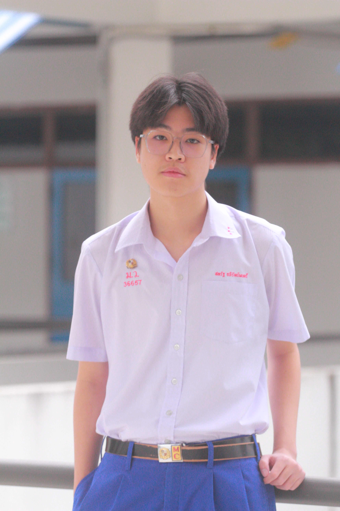

สวัสดีครับ ผมชื่อ ยูเอส หรือเพื่อน ๆ เรียกกันว่า เอส นั่นเองครับ
ผมจบจากโรงเรียนมงฟอร์ตวิทยาลัย จากจังหวัดเชียงใหม่ครับ และ ในปัจจุบัน กำลังศึกษาอยู่ที่คณะวิศวกรรมศาสตร์ สาขาคอมพิวเตอร์ ที่มหาวิทยาลัยเชียงใหม่ครับ
ยินดีที่ได้รู้จักครับผม :3
เคยเข้าร่วมการแข่งขันคณิตศาสตร์ IMC แห่งประเทศไทยในปี พ.ศ. 2563
ได้ทำโปรเจกต์เกี่ยวกับธนาคารบน Web ที่มีฟังก์ชั่นการใช้งานต่าง ๆ เทียบเท่ากับธนาคารที่ใช้กันในปัจจุบัน
สิง่ที่ชอบทำให้ปัจจุบันจะเป็นการนอนและการเล่นเกมครับ แต่หากมีเวลาว่างมากมากก็จะออกไปวิ่งหรือเดินเล่นพร้อมฟังเพลงไปด้วยครับ เพราะผมรู้สึกเป็นกิจกรรมที่ได้ทั้งฟังเพลงที่ชอบและได้ออกกำลังกายไปในตัวด้วยครับ